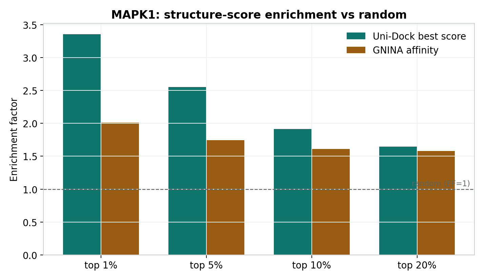
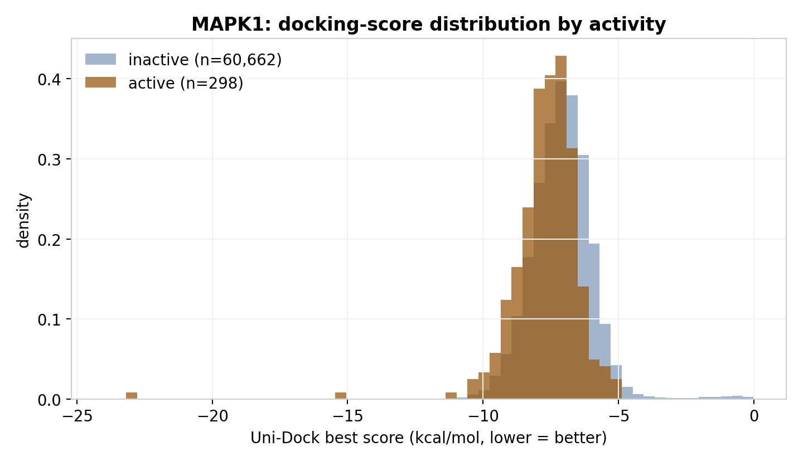
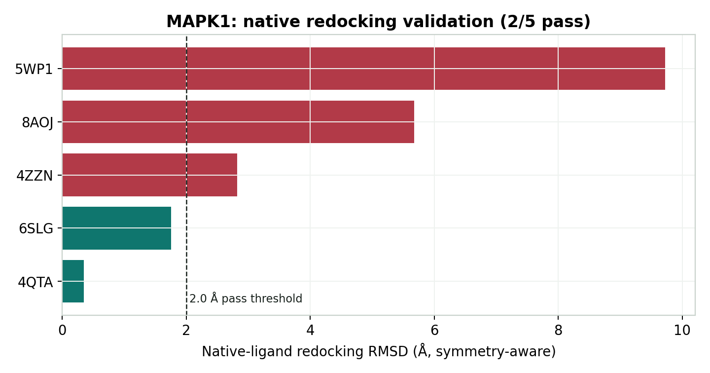

Small molecules
ScreenSift · virtual-screening triage
ScreenSift is an end-to-end virtual-screening triage pipeline. It turns a raw ligand table into a transparent, ranked candidate shortlist: curate and standardize molecules, prepare 3D/PDBQT ligands and a receptor ensemble, run Uni-Dock docking and GNINA rescoring, compute ECFP4/Tanimoto similarity evidence, and combine the channels into interpretable candidate buckets. It is packaged as an installable Python API (find_candidates) and a config-driven CLI.
I ran it end to end on the full LIT-PCBA MAPK1 benchmark, and kept the framing deliberately leakage-aware: docking enriches actives at the top of the list but does not separate them from inactives globally, so similarity and structure are reported as separate evidence channels rather than blended into a single opaque score.
At a glance
screensift package, config-driven pipeline, 115 passing tests, GitHub Actions CIApproach
Virtual-screening projects mix heterogeneous evidence — chemical similarity, docking scores, and ML rescoring — that are not on the same scale. A single weighted sum can hide useful candidates when one channel is weak or missing. ScreenSift instead normalizes each channel with its known score direction, assigns interpretable support buckets (consensus_supported, analog_supported, structure_supported, deprioritized), and returns the top candidates with the evidence that ranked them. It ranks and explains candidates; it does not claim experimental activity.
Pipeline
Dataset + schema + target → molecular audit and canonical ligand table → ligand 3D/PDBQT preparation → receptor/box-driven Uni-Dock screening → optional GNINA rescoring → ECFP4/Tanimoto similarity evidence → normalized structure and similarity channels → ranked candidate table. Native-ligand redocking and GNINA score-only checks validate the docking setup before ranking.
Results
| Stage | Result |
|---|---|
| Dataset audit / curation | 61,971 ligands (298 active, 60,662 inactive) |
| Receptor ensemble | 5 MAPK1 holo structures (4QTA, 4ZZN, 5WP1, 6SLG, 8AOJ) |
| Uni-Dock screening | 309,230 receptor–ligand docking jobs |
| GNINA rescoring | 60,960 ligands (Docker/GPU), 60,856 complete |
| Enrichment (Uni-Dock best score) | EF₁% 3.35, EF₅% 2.55, EF₁₀% 1.91 |
| Native redocking (symmetry-aware, receptor frame) | 2/5 receptors ≤ 2.0 Å (4QTA 0.35 Å, 6SLG 1.76 Å) |
| Candidate shortlist | top 100 by unified evidence score (96 structure-supported, 4 consensus-supported) |
Figures



Scope
Retrospective, public-data workflow over the LIT-PCBA MAPK1 benchmark. The output is a ranked triage table with explicit evidence channels, not a claim of new MAPK1 inhibitors. Similarity and structure are treated as separate evidence, not a method-vs-method benchmark.
Reproducibility
The standalone repository is a pip-installable package with a runnable MAPK1 example (ranking demo plus a docking-ready receptor ensemble), committed reference outputs to check a run against, reports, tests, and GitHub Actions CI.
pip install -e .
python example/mapk1/run_example.py
python -m pytest tests/Technical focus
End-to-end CADD workflow design, ensemble docking and GNINA rescoring, symmetry-aware redocking validation, direction-aware evidence normalization, leakage-aware evaluation, and packaging a research pipeline into a tested, installable tool.